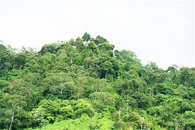
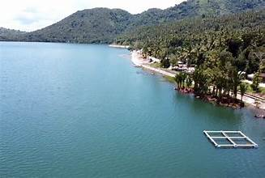
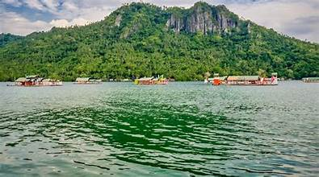

Overview
Zamboanga del Sur occupies the southern and central portions of the Zamboanga Peninsula. The province is characterized by a rugged terrain of mountains, river valleys, coastal plains, and offshore islands.
Mountain Ranges
The Zamboanga Mountain Range runs through the interior of the province, with Mount Pinukis being the highest peak at 2,836 meters above sea level. These mountains are covered with dense tropical forests and are home to numerous endemic species.
River Systems
Several major rivers drain the province, including the Labangan, Kumalarang, and Tigbao rivers. These waterways support agriculture, fishing, and transportation in the interior communities.
Coastal Areas
The province has an extensive coastline along Illana Bay and the Moro Gulf. The coast features sandy beaches, mangrove forests, and coral reefs that support rich marine biodiversity.
Islands
Zamboanga del Sur includes several offshore islands, notably the Dao Dao Islands, which are popular tourist destinations known for crystal-clear waters and white sand beaches.
Land Use
The lowland areas are used primarily for agriculture, while upland regions are forested or used for upland farming by indigenous communities. Coastal zones support fishing villages and aquaculture.
Key Facts
- Total Land Area: Approximately 10,177 sq km
- Location: Zamboanga Peninsula, Mindanao
- Major River: Labangan River
- Highest Peak: Mount Pinukis (2,836 m)
- Coastline: Fronts Illana Bay and Moro Gulf